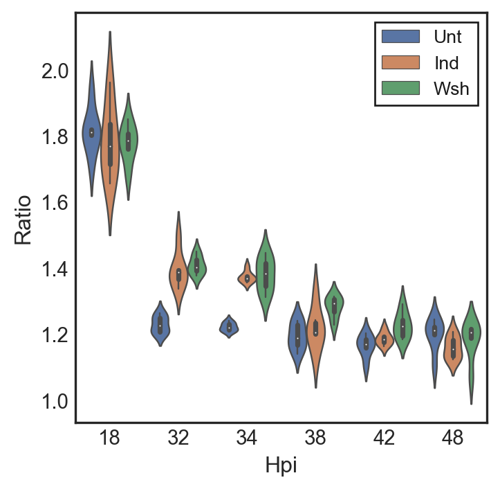

Code
import matplotlib.pyplot as plt
import matplotlib.ticker as ticker
import numpy as np; np.random.seed(22)
import seaborn as sns; sns.set(color_codes=True)
import pandas as pd
import mathCody Appa
February 2, 2023
Using digital droplet PCR data we were able to quantify the ratio of the chromosomal origin and terminus of chlamydia on a population level. Using this data we can determine whether a population is actively in the cell cycle or not.
The data used here is counts from around 20k individual PCR reactions per time point isolated in lipid droplets. We then use probes that are specific to individual chromosomal regions within the origin or terminus to determine the number of each. Actively replicating chromosomes start a replication fork at the origin leading to a 2:1 origin to terminus ratio. Non-replicating chromosomes only have one origin.
| Hpi | Treatment | PyrG raw | NqrA raw | Ratio | Dilution | pyrG copies/ul | nqrA copies/ul | |
|---|---|---|---|---|---|---|---|---|
| 0 | 18 | Unt | 76.9 | 140.0 | 1.820546 | 150 | 11535 | 21000 |
| 1 | 18 | Unt | 17.9 | 30.7 | 1.715084 | 600 | 10740 | 18420 |
| 2 | 18 | Unt | 77.6 | 141.0 | 1.817010 | 150 | 11640 | 21150 |
| 3 | 18 | Unt | 20.3 | 39.2 | 1.931034 | 600 | 12180 | 23520 |
| 4 | 18 | Unt | 91.9 | 166.0 | 1.806311 | 150 | 13785 | 24900 |
| ... | ... | ... | ... | ... | ... | ... | ... | ... |
| 103 | 48 | Wsh | 67.2 | 71.9 | 1.069940 | 6400 | 430080 | 460160 |
| 104 | 48 | Wsh | 210.0 | 251.0 | 1.195238 | 1600 | 336000 | 401600 |
| 105 | 48 | Wsh | 50.8 | 61.8 | 1.216535 | 6400 | 325120 | 395520 |
| 106 | 48 | Wsh | 268.0 | 326.0 | 1.216418 | 1600 | 428800 | 521600 |
| 107 | 48 | Wsh | 59.1 | 70.1 | 1.186125 | 6400 | 378240 | 448640 |
108 rows × 8 columns
| Hpi | PyrG raw | NqrA raw | Ratio | Dilution | pyrG copies/ul | nqrA copies/ul | |
|---|---|---|---|---|---|---|---|
| count | 108.000000 | 108.000000 | 108.000000 | 108.000000 | 108.000000 | 108.000000 | 1.080000e+02 |
| mean | 35.333333 | 225.462963 | 295.671296 | 1.344637 | 1729.166667 | 237534.120370 | 2.984672e+05 |
| std | 9.400736 | 199.513261 | 267.843689 | 0.221217 | 1721.227081 | 144646.196824 | 1.797389e+05 |
| min | 18.000000 | 17.900000 | 30.700000 | 1.069940 | 150.000000 | 10740.000000 | 1.842000e+04 |
| 25% | 32.000000 | 83.825000 | 107.250000 | 1.200338 | 550.000000 | 165720.000000 | 2.074000e+05 |
| 50% | 36.000000 | 146.500000 | 199.500000 | 1.242610 | 1200.000000 | 253560.000000 | 3.182400e+05 |
| 75% | 42.000000 | 352.500000 | 435.250000 | 1.395836 | 2000.000000 | 308400.000000 | 4.013600e+05 |
| max | 48.000000 | 846.000000 | 1126.000000 | 1.961538 | 6400.000000 | 889600.000000 | 1.152000e+06 |
| Attribute | Type | Description | |
|---|---|---|---|
| 0 | Hpi | Categorical | Hours post infection |
| 1 | Treatment | Categorical | Whether sample was untreated, induced for Euo,... |
| 2 | PyrG raw | Quantitative | PyrG+ means the PCR was positive for the termi... |
| 3 | NqrA raw | Quantitative | NqrA+ means the PCR was positive for the origi... |
| 4 | Ratio | Quantitative | The ratio of Origins/Termini |
| 5 | Dilution | Categorical | Dilution of the wells prior to readout |
| 6 | PyrG copies/ul | Quantitative | PyrG numbers adjusted for dilution factor |
| 7 | NqrA copies/ul | Quantitative | Nqra numbers adjusted for dilution factor |
In order to properly visualize the ratios of three different treatments: Untreated, Induced, and Washout samples, I decided to use a violin plot. The violin plot allows for accurate visualization of ratios similar to a box and whisker plot, we then spaced out the individual treatments so that they would not overlap and cover each other.
with plt.style.context('seaborn-white'):
fig, ax = plt.subplots(ncols=1)
sns.violinplot(x=df['Hpi'], y=df['Ratio'], hue=df['Treatment'], data=df, ax=ax, dodge ="True", boxprops=dict(alpha=1),linewidth=.9, scale="width", showmeans=True)
with plt.style.context('classic'):
ax.legend(loc='upper right', fontsize=10)
ax.ticklabel_format( axis="y", style="sci", scilimits=(0,2))
fig.set_size_inches(4, 4)
#ax.set_yscale('symlog', linthreshy=200)
My hypothesis for this experiment was that the untreated, induced, and washout samples would all follow a similar trend as induction did not affect accumulation of non dividing cells. There are multiple action-target pairs that we can draw from this graph.
We wanted to identify features by Identifying the Ratios per biological replicate
After identifying the ratios we then wanted to Summarize the Trends
after summarizing the trends we could then Compare Similarity overtime, Discover Trends in the different treatments, and Derive Correlation between treatment and trends.
The most important action target pair, however is that we Enjoyed the Features!
We concluded from this plot that each treatment follows the same trend of starting off as dividing populations and then leaving the cell cycle after 32hpi. This indicates that the cells within the population are largely non replicators such as RBs or IBs.